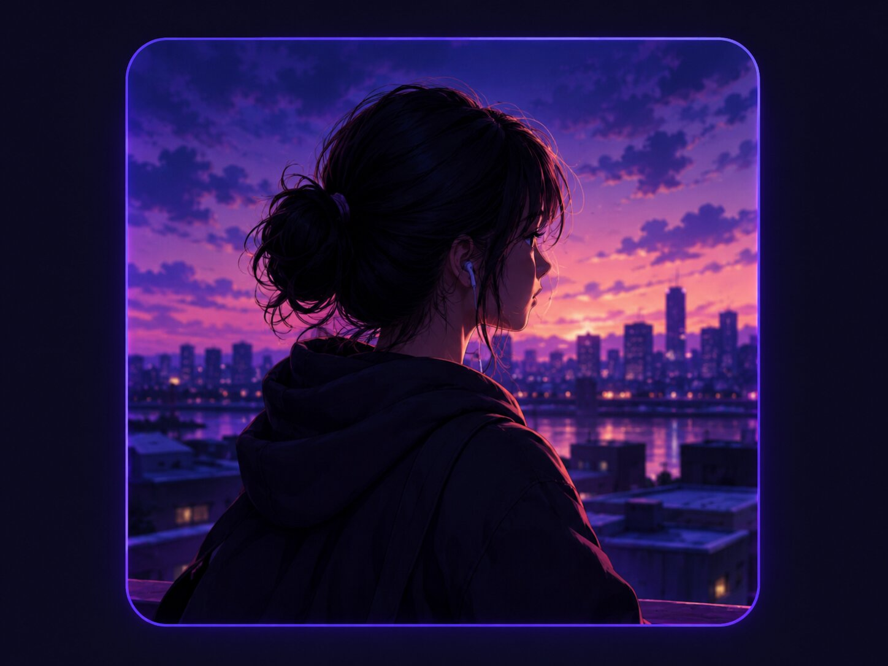

THE PROJECT
About CyberTraceX
CyberTraceX is a cybersecurity learning project created by Arusham Tahir. It shares beginner-friendly guides and a simulated terminal to make digital safety concepts easier to explore.
The goal is simple: help people recognise common online risks and make safer choices when using technology.
What you’ll find
Clear articles about phishing, account security, and safer networks, plus a small interactive learning demo.
How it’s approached
Concepts are explained in plain language, with an emphasis on safe and responsible learning.
MEET THE FOUNDER

Arusham Tahir
Founder & Creator of CyberTraceX
I am a cybersecurity learner interested in making digital safety easier to understand. I created CyberTraceX to share beginner-friendly guides and interactive learning experiences that help people build safer digital habits.
CONNECT
Find me online
Follow the project or get in touch.